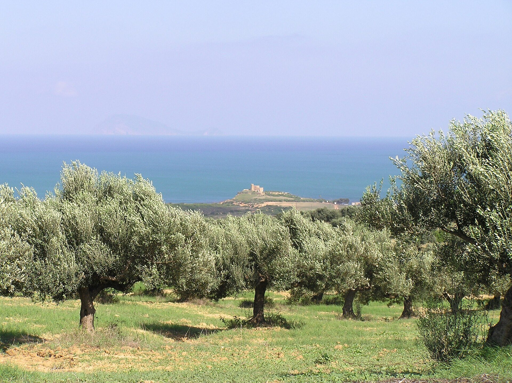
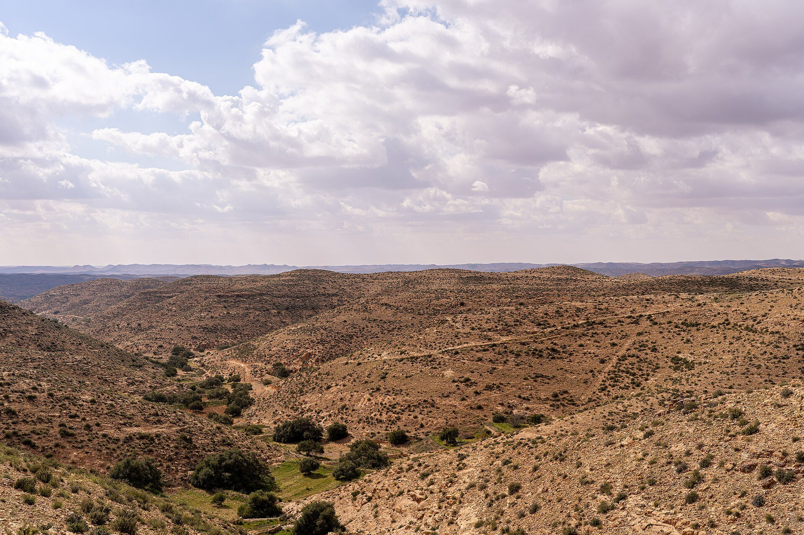
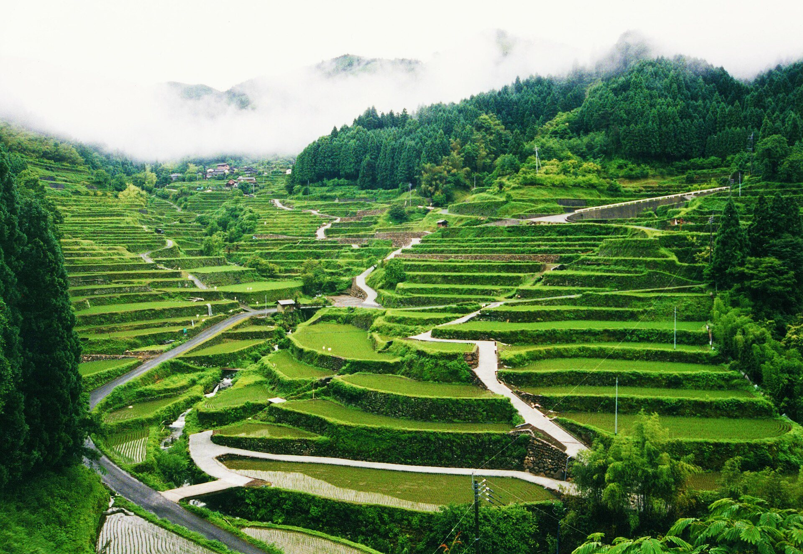
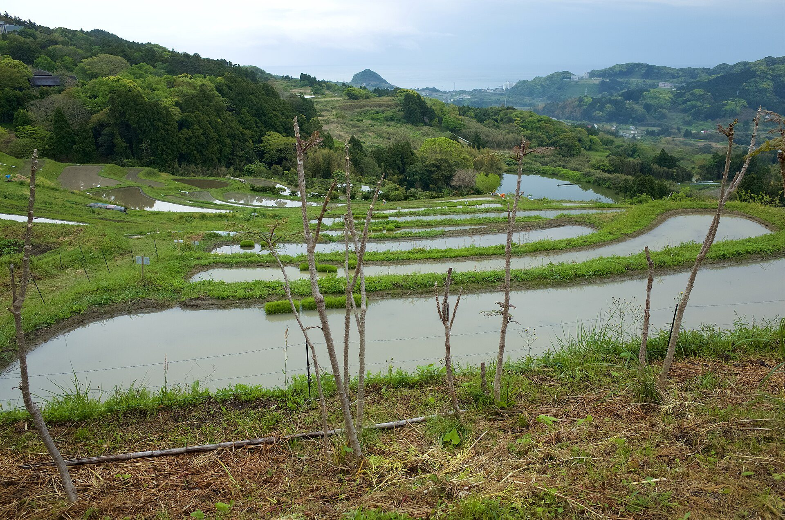

Soil watch
Moisture in the soil, watched over time, so you see how it changes.
The water assistant for the farms of Tunisia


Local, practical help for the farms of Tunisia. Aqua watches the soil and the tank, reads the rain, and shows the water you save. Guides inside the app welcome farmers, young people and women entering the land.
Learn more
Two lands, one craft. Both know how to farm where water is precious.
Open the work of the farm
Quiet tools for soil, rain, crops and people on the farm.
Moisture in the soil, watched over time, so you see how it changes.
The water in the tank, shown as it rises and falls.

Water now, water a little, or wait for the rain. See the water you save.
For the week, the month and the year, by well, public network and rain tank. Each crop has its need.
A visual map of the farm with coloured plots.
Tunisian farming, spoken aloud, so everyone can ask, including people who do not read easily.
Empty tank, dry soil, rain coming — on WhatsApp and on the phone.
Owner, manager, technician and viewer. Each person sees and does only what they should.
It reads the weather and the soil, then says water now, water a little, or wait for the rain. You also see the water you save.
Anyone on the farm. The advisor knows Tunisian farming and can be used by voice, so people who do not read easily can still ask.
On the web, on the desktop and on Android. Alerts also reach you on WhatsApp and on the phone.
The same care, wherever you open it. Ready for solar power, with less water wasted and less energy used.
Wait when rain is on the way. Aqua reads the forecast and tells you when to hold back.
Watch moisture as it changes. Water when the soil is dry, not by habit.
Know the level of the tank before it runs empty. An alert will reach you on the phone.
Rain in the tank is a gift. Plan by well, public network and rain tank, through the seasons.